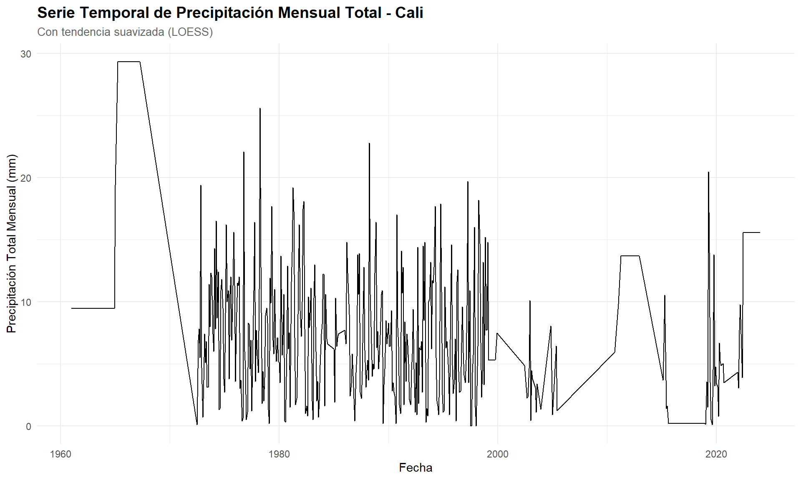
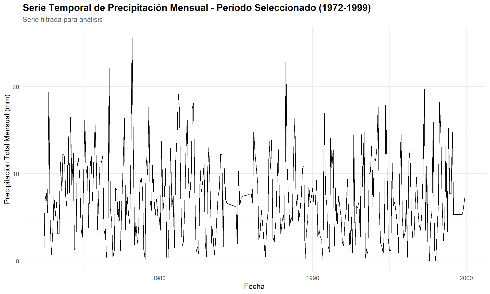
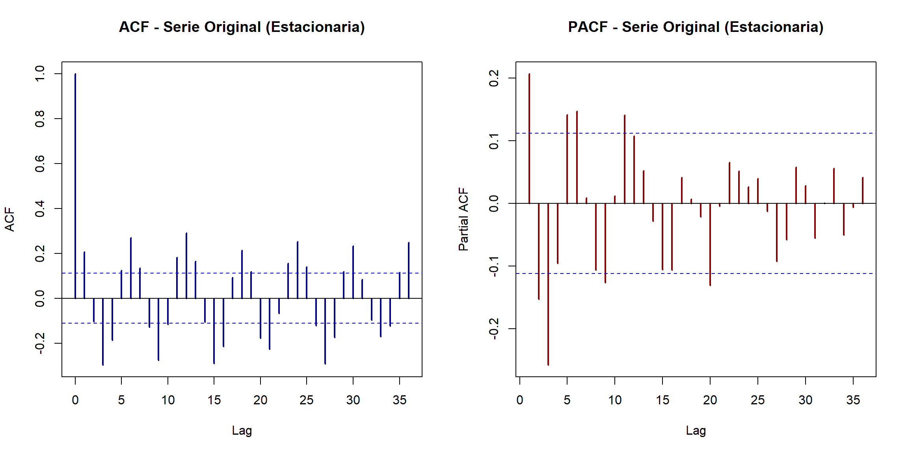

3 Análisis Exploratorio de Series de Tiempo
En este capítulo se presenta el análisis exploratorio de los datos de precipitación para Cali, Colombia, obtenidos de la estación meteorológica CALI ALFONSO BONILL (NASA/NOAA). El análisis incluye la visualización de series temporales, identificación de rezagos (lags), cálculo de promedios móviles y detección de estacionalidad.
Nota: Los datos utilizados en este capítulo fueron cargados y preparados en el Capítulo 2. Los objetos ts_mensual, datos_limpios y datos_analisis están disponibles directamente.
3.1 Visualización de Series Temporales
3.1.1 Serie Temporal de Precipitación Mensual

Observando la serie completa, se identifican períodos con datos faltantes o inconsistentes, particularmente antes de 1972 y después de 1999. Para el análisis subsecuente, se trabajará con el período 1972-07 a 1999-12, que presenta la mayor continuidad y calidad de datos.
## Período de análisis seleccionado:## Desde: 1972-07## Hasta: 1999-12## Total de meses: 307## Valores faltantes: 0
3.1.2 Visualización por Años
Este gráfico muestra los 12 meses de cada año superpuestos, permitiendo comparar patrones estacionales entre diferentes años.

Análisis del patrón anual:
- Cada línea representa el ciclo anual completo de precipitación para un año específico
- Los colores indican diferentes años (amarillo = años recientes, morado = años antiguos)
- La variabilidad entre años muestra la alta variabilidad interanual característica del clima tropical
- Se pueden identificar años particularmente secos o húmedos por la posición de sus líneas
Identificación de estacionalidad:
Del gráfico se observa un patrón estacional característico del régimen de precipitación en Cali:
Período húmedo 1 (marzo-junio): Se identifica un aumento considerable de la precipitación que alcanza su máximo entre abril y mayo, seguido de una disminución progresiva hacia junio. Este período corresponde a la primera temporada de lluvias.
Período seco intermedio (julio-agosto): Los meses de julio y agosto presentan consistentemente precipitaciones bajas, configurando una estación seca intermedia.
Período húmedo 2 (septiembre-diciembre): Se observa un segundo aumento de precipitación que comienza en septiembre, alcanza su máximo entre octubre y noviembre, para luego disminuir en diciembre.
Período seco principal (enero-febrero): Los primeros meses del año mantienen precipitaciones bajas, constituyendo la estación seca principal.
Este patrón evidencia una estacionalidad bimodal característica del clima tropical de la región andina colombiana, con dos temporadas de lluvias y dos temporadas secas bien diferenciadas a lo largo del año. La alta superposición de las líneas en ciertos meses (especialmente en los períodos húmedos) confirma la consistencia del patrón estacional, aunque con variabilidad interanual significativa en la magnitud de las precipitaciones.
3.1.3 Visualización de Patrones Normalizados por Año
Para analizar el comportamiento estacional sin la influencia de la magnitud de precipitación de cada año (años secos vs. húmedos), normalizamos los datos de cada año entre 0 y 1. Esto permite identificar si el patrón temporal de distribución de lluvias es consistente independientemente de la cantidad total anual.

Análisis del patrón normalizado:
Este gráfico revela información crucial sobre la consistencia del comportamiento estacional:
Convergencia de patrones: Al eliminar el efecto de la magnitud absoluta, se observa una notable convergencia de las trayectorias anuales, lo que confirma que la distribución temporal de las lluvias sigue un patrón muy consistente año tras año.
Identificación clara de períodos:
- Máximos consistentes: Los picos normalizados ocurren sistemáticamente en abril-mayo (primer máximo) y octubre-noviembre (segundo máximo), confirmando la estacionalidad bimodal.
- Mínimos consistentes: Los valores más bajos se concentran en enero-febrero y julio-agosto, independientemente de si el año fue húmedo o seco.
Variabilidad reducida: La dispersión entre años es significativamente menor en escala normalizada, lo que indica que las diferencias entre años se deben principalmente a la magnitud total de precipitación, no a cambios en el patrón temporal de distribución.
Comparación con datos absolutos:
Mientras que el gráfico con valores absolutos muestra cuánto llovió, el gráfico normalizado muestra cuándo llovió en relación con el resto del año. Esta visualización confirma que el calendario de lluvias es predecible, aunque la intensidad varíe entre años.
3.2 Análisis de Autocorrelación y Rezagos
3.2.1 Gráficos de Lag (Rezagos)
Los gráficos de lag permiten identificar si existe correlación entre los valores de la serie y sus valores pasados (rezagados). Si hay una relación clara, indica que valores pasados pueden ayudar a predecir valores futuros.

Análisis de los gráficos de lag:
Observando los 12 gráficos de rezago, se pueden identificar las siguientes características:
Lags 1-11: Los puntos se distribuyen de forma mayormente aleatoria sin mostrar una tendencia lineal clara. Esto indica baja autocorrelación de corto y mediano plazo, lo que significa que el valor de precipitación en un mes tiene poca relación con los meses inmediatamente anteriores.
Lag 12: Aunque se observa una ligera estructura en la nube de puntos, la correlación sigue siendo débil. Esto sugiere que existe un patrón estacional anual, pero la variabilidad dentro de cada mes es alta.
Autocorrelación: Qué tan relacionado está el valor actual con valores pasados. En este caso, la baja autocorrelación indica que la precipitación es altamente variable mes a mes, incluso dentro de la misma época del año.
3.3 Prueba de Estacionariedad
La estacionariedad es un requisito fundamental para muchos modelos de pronóstico de series temporales. Una serie es estacionaria cuando sus propiedades estadísticas (media, varianza) no cambian con el tiempo.
3.3.1 Test de Dickey-Fuller Aumentado (ADF)
El test ADF es una prueba estadística para determinar si una serie temporal es estacionaria.
- Hipótesis nula (H₀): La serie tiene raíz unitaria (NO es estacionaria)
- Hipótesis alternativa (H₁): La serie es estacionaria
- Criterio de decisión: Si p-valor < 0.05, rechazamos H₀ y concluimos que la serie ES estacionaria
## === TEST DE DICKEY-FULLER AUMENTADO ===## Serie: Precipitación mensual (original)## Estadístico ADF: -6.1479## P-valor: 0.01## CONCLUSIÓN: La serie ES ESTACIONARIA (p < 0.05)
## No es necesaria la diferenciación.Explicación: ¿Por qué no fue necesaria la diferenciación?
La diferenciación es una transformación matemática que se aplica a series temporales no estacionarias para remover tendencias o cambios sistemáticos en la media a lo largo del tiempo. En el caso de nuestra serie de precipitación mensual, el análisis reveló que la diferenciación no es necesaria por las siguientes razones:
Evidencia estadística:
Test ADF concluyente: El test de Dickey-Fuller Aumentado rechaza la hipótesis nula de raíz unitaria (p-valor < 0.05), confirmando que la serie ya es estacionaria en su forma original.
Ausencia de tendencia: La descomposición STL mostró que no existe una tendencia de largo plazo creciente o decreciente. El componente de tendencia fluctúa alrededor de un nivel constante.
3.3.2 Análisis ACF y PACF de la Serie Original
Dado que la serie es estacionaria, analizamos directamente los correlogramas para identificar posibles componentes AR y MA del modelo.

##
## === INTERPRETACIÓN ACF/PACF ===## Los gráficos ACF y PACF de la serie estacionaria ayudan a:## 1. Confirmar la estacionariedad (valores dentro de bandas de confianza)## 2. Identificar el orden MA (q) desde el ACF## 3. Identificar el orden AR (p) desde el PACF## 4. Detectar estacionalidad (picos significativos en múltiplos de 12)3.4 Análisis de Promedios Móviles
Los promedios móviles (MA - Moving Averages) son una técnica de suavizado que ayuda a identificar tendencias y patrones subyacentes al reducir el ruido de las fluctuaciones de corto plazo. Calculamos promedios móviles de diferentes órdenes para visualizar patrones a distintas escalas temporales.
3.4.1 Promedios Móviles de Diferentes Órdenes

Interpretación de los promedios móviles:
MA(3) - Promedio móvil de 3 meses: Suaviza las fluctuaciones mensuales más extremas pero mantiene gran parte de la variabilidad estacional. Permite identificar ciclos de corto plazo.
MA(6) - Promedio móvil de 6 meses: Proporciona un suavizado intermedio que atenúa considerablemente las fluctuaciones de corto plazo. Facilita la visualización de patrones semestrales.
MA(12) - Promedio móvil de 12 meses: Elimina casi completamente la componente estacional, revelando únicamente la tendencia de largo plazo. Este promedio muestra que no existe una tendencia marcada creciente o decreciente en el período analizado.
Observaciones clave:
La ausencia de tendencia en el MA(12) confirma que la serie es predominantemente estacionaria en media, con fluctuaciones alrededor de un nivel constante (~8-10 mm mensuales).
Los patrones cíclicos en MA(3) y MA(6) reflejan la estacionalidad bimodal identificada anteriormente.
La amplitud constante de las oscilaciones sugiere que la varianza se mantiene relativamente estable a lo largo del tiempo.
3.4.2 Descomposición de la Serie Temporal
Descomponemos la serie en sus componentes principales: tendencia, estacionalidad y residuos.

Análisis de componentes:
Serie Original (Data): Muestra los datos observados con alta variabilidad.
Componente Estacional (Seasonal): Revela el patrón bimodal claramente definido que se repite cada año, con picos en abril-mayo y octubre-noviembre.
Componente de Tendencia (Trend): Confirma la ausencia de tendencia de largo plazo, mostrando fluctuaciones suaves alrededor de un nivel constante.
Residuos (Remainder): Representan la variabilidad no explicada por estacionalidad ni tendencia. La distribución aproximadamente simétrica alrededor de cero sugiere que la descomposición captura adecuadamente los patrones principales.